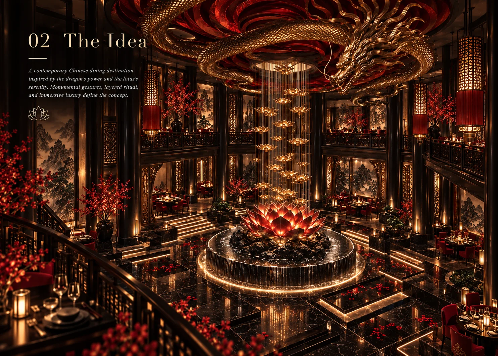
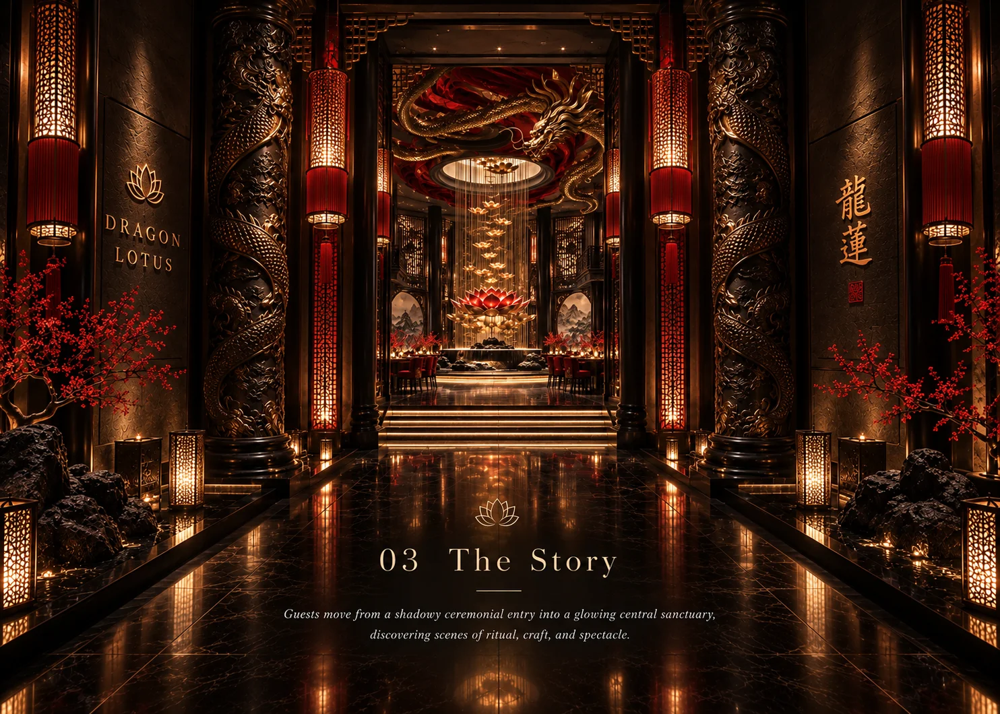
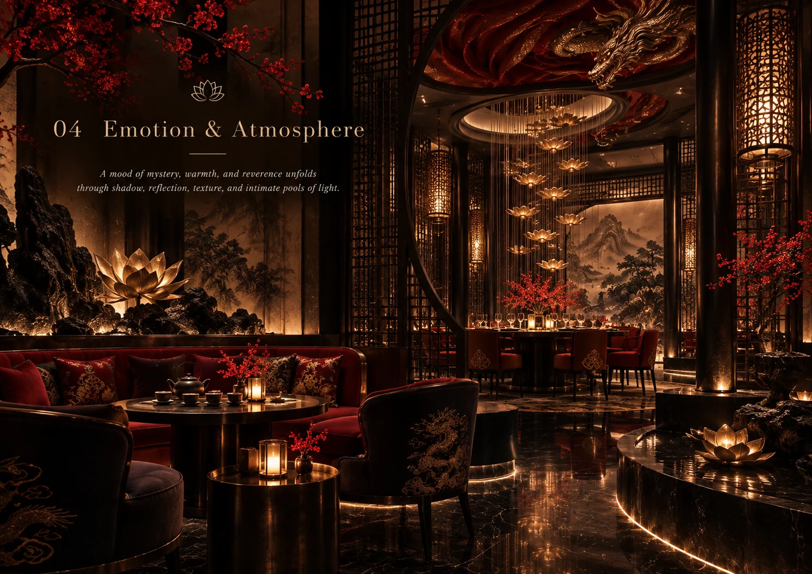
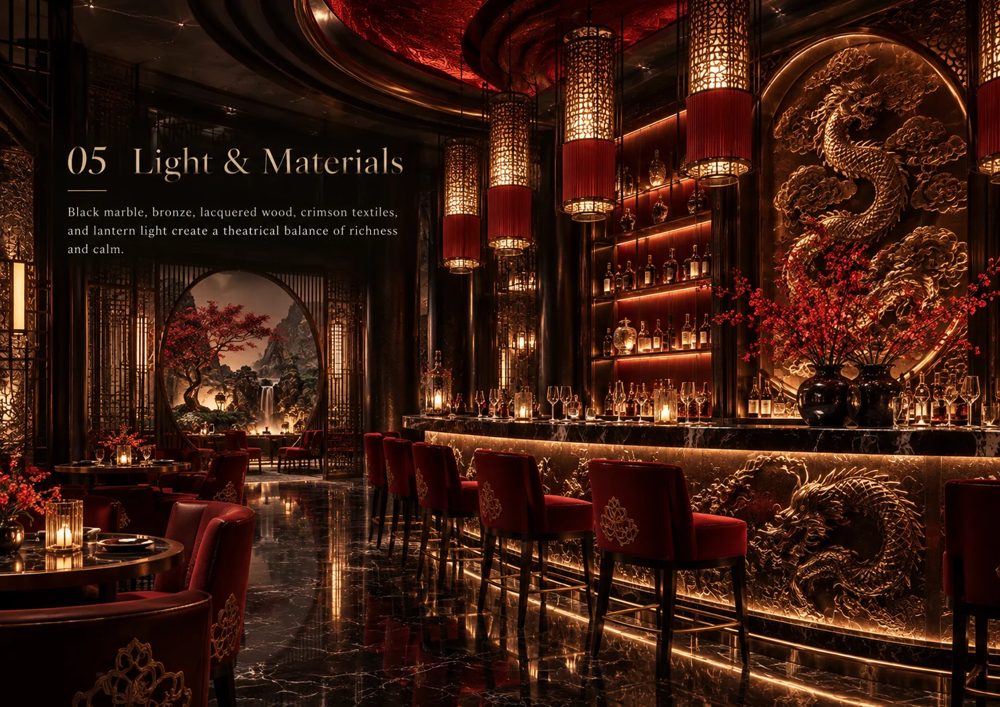
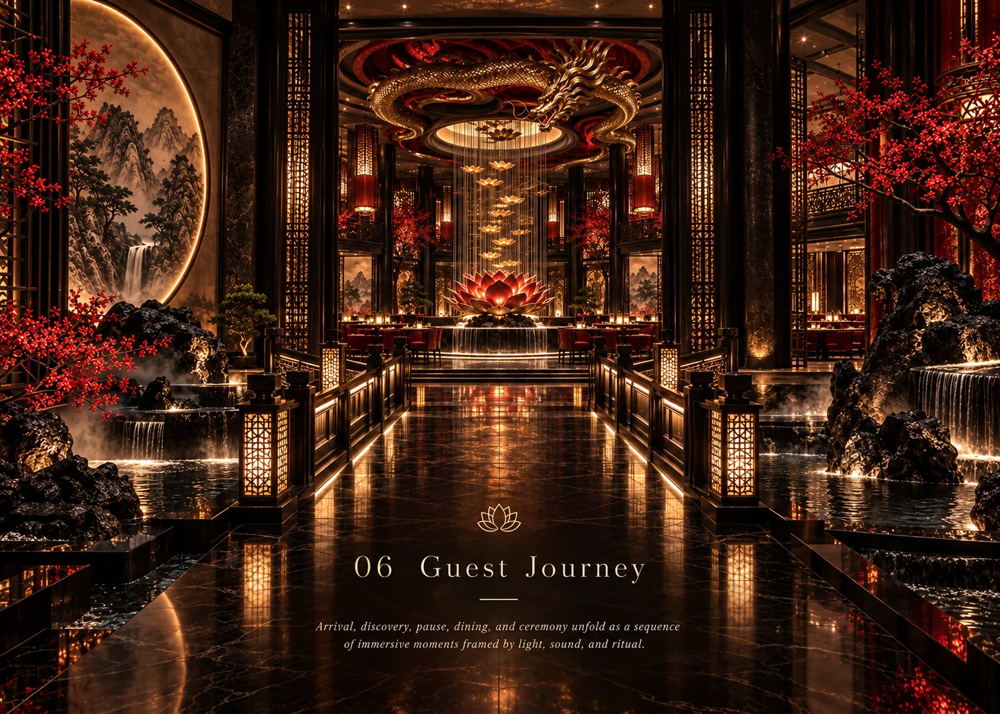
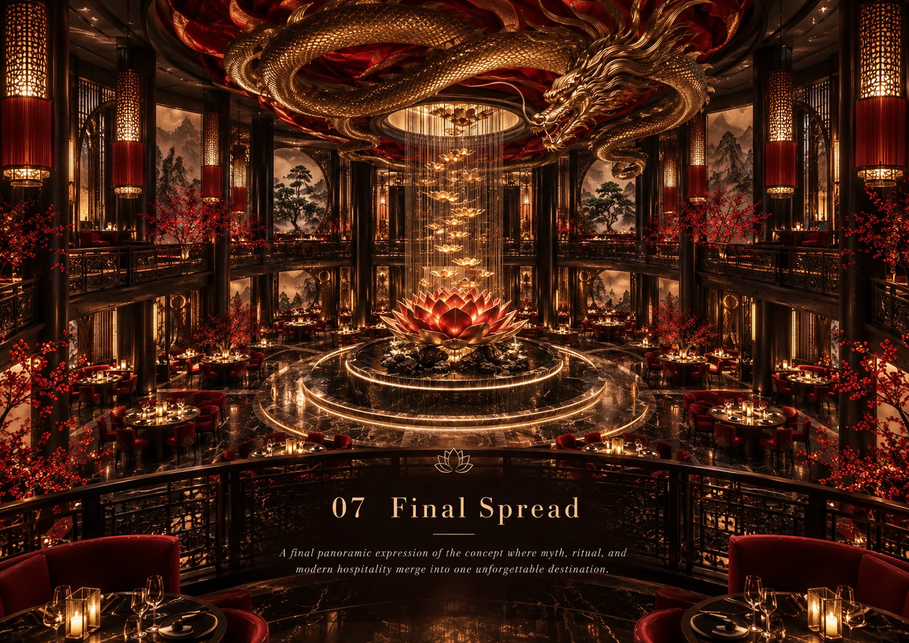

Luxury Chinese restaurant concept
DRAGON LOTUS
Red lacquer, carved gold and the quiet ceremony of the table — a contemporary Chinese dining destination.

DRAGON LOTUS is a luxury Chinese restaurant concept built around ceremony, craft and the symbolism of the dragon and the lotus — strength balanced by stillness. A grand dining hall with a sculpted golden dragon ceiling and red lacquer columns forms the heart of the space, while a tea lounge and moon-gate thresholds offer quieter moments within the evening. The concept explores how traditional Chinese motifs can become a contemporary dining atmosphere rather than decoration. Carved reliefs, lantern light and reflective surfaces carry the story, so the room itself becomes part of the ritual of the meal.
Material direction
Red lacquer; carved and gilded timber; dark polished stone; brushed brass; silk and velvet upholstery; lantern glass; hand-modelled plaster relief. These are concept-stage material directions, with final products and detailing to be developed separately.
My role
Concept, atmosphere, lighting, materials and guest journey — Maria Andriiuk.
Concept & story
The name joins two symbols: the dragon for energy and celebration, the lotus for calm and renewal. The restaurant is imagined as a sequence of ceremonial spaces — arrival hall, tea lounge, grand dining hall and a reflective water axis — each carrying one part of the story, so dinner unfolds like a procession rather than a single room.
Emotion & atmosphere
The intended mood is rich, warm and quietly majestic. Deep reds and low golden light create intimacy inside a grand volume, while lotus lamps and the tea ritual slow the pace between courses. The sensory brief explores the scent of osmanthus and aged pu-erh and the soft sound of water along the central axis; these remain creative directions for later operational consideration.
Light & material direction
Light is treated as gilding: lantern pendants, concealed warm lines along carved reliefs and a softly illuminated dragon ceiling above the hall. Red lacquer and gilded timber are grounded by dark stone and shadowed corners, so the gold reads as glow rather than glitter. Technical lighting, ceiling fabrication and final specifications would be resolved during further design development.
Guest journey
01 / Arrival — A moon-gate threshold opens into the red lacquer entry hall. 02 / Welcome — Tea is served beneath lotus lamps in the lounge. 03 / Procession — A reflective water axis leads guests toward the dining hall. 04 / The hall — The golden dragon ceiling and carved columns frame the table. 05 / Lingering — The evening closes back in the tea lounge, at a slower pace.
Project scope
This self-initiated, unbuilt concept is presented through seven boards covering the idea, story, atmosphere, light and materials, guest journey and final composition. Concept imagery communicates the creative direction. Measured planning, construction documentation, engineering and site delivery are outside this concept study.

The idea — A contemporary Chinese dining destination where ceremony shapes the room.Open full size ↗
The story — Dragon columns and gilded reliefs carry the narrative from threshold to table.Open full size ↗
Emotion & atmosphere — A tea lounge with lotus lamps slows the pace between courses.Open full size ↗
Light & materials — Red lacquer, carved gold, dark stone and lantern light in layered balance.Open full size ↗
Guest journey — Arrival, welcome, procession, the hall and lingering: five moments along the water axis.Open full size ↗
Final composition — The grand hall beneath the golden dragon ceiling, where the full palette comes together.Open full size ↗